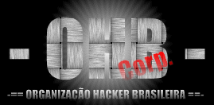

Aí olha nós mais uma vez na área!!!hauaauaaaahauahu
Estamos indignados!!! Pq nós
hackamos e nem saímos nos jornais, e akeles lammers que
roubam senha pra fica usando saem no Diario Catarinense, Jornal
da Manhã (Sux)!!
Aí queremos uma matéria de Capa pra nós!! Mas antes deem uma
lida no nosso texto abaixo!!!
Ainda continuamos a pagar as
dívidas das grandes empresas que no passado se
enrolaram em débitos com bancos internacionais. O Brasil teve um
processo de
industrialização complicado. Sofremos várias influências das
grandes potências internacionais.
O Estados Unidos foi o maior agente deste "crescimento"
industrial, que desde Getúlio Vargas
ocorre no país. Somos o reflexo de uma economia mal administrada
por políticos corruptos.
Praticamente, durante 20 anos (ditadura militar), fomos enganados
com um desenvolvimento irreal,
isso significa que, o Brasil cresceu industrialmente às custas
dos cofres públicos.
Ainda que pensamos em mudar esta realidade de pobreza (anos 80),
dívida externa (anos 70)
e de vender o país para as multinacionais é muito complexo.
Gostaria de salientar nesta
conclusão um fato que poderemos pensar muito atentamente. Diz o
ditado "quem conhece o
passado não comete os mesmos erros no futuro", talvez não
estamos naquela
política-militar vigente até o ano de 1985 - com fim nas
"Diretas Já"- onde quem fosse
contra o governo era torturado, perseguido e até executado, mas
vivemos no "Reinado FHC".
Que mesmo sem torturas físicas somos aniquilados com a tortura
do desemprego.
Uma comparação que posso fazer é referente aos Sem-Terra. Que
estão nesta situação
porque em nenhum governo foi feita uma reforma agrária, e quando
foi tentado, fomos
surpresos com um GOLPE. Será que estes homens e mulheres que
lutam por um pedaço
de terra não podem ser comparados aos jovens de 20 anos atrás
que tinham um único ideal:
"Liberdade e Democracia"? Precisamos conhecer melhor a
história dos processos
político-econômicos de nosso país. Só assim, saberemos o
porque de tantos problemas
financeiros em nossa nação.
"Governo Otário!!! Políticos Corruptos!!!
Ai FHC seus dias estaum contatos.
BRASIL 500!!
500 ANOS DE ESCÓRIA!!!
Agradecimentos:
Gabriel
o Pensador, Bl0w tean, P5s e a todos q lutam pelos direitos da nação.
Alo pro _n0p_ aloww mano!!!
Declaração
_LaraSpy_ EU TE AMO MEU AMOR!!!!!
Fuck's:
FHC,
FMI, GOVERNO, E AOS TROXAS Q VAUM NO #OHB ENXER O SACO!
dr_dep vai se fude seu lammer do kralho!! So hacka o que ja ta hackado isso
e facil cuzao!!!
Members
Ass0mbracao
c3zar
Combat18_
Sombra-ES
S4ph0X
X-Gh0sT
_B0dd4h_
Massive
NeTRap
Hagen
_n0p_
WebDesignHacked byAss0mbracao